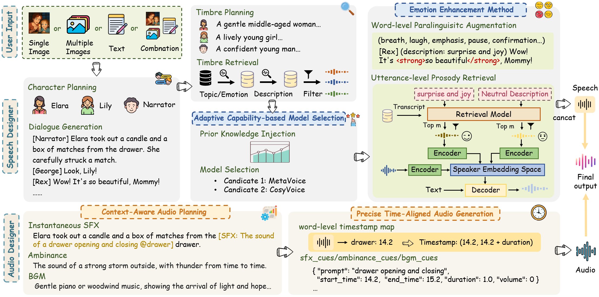
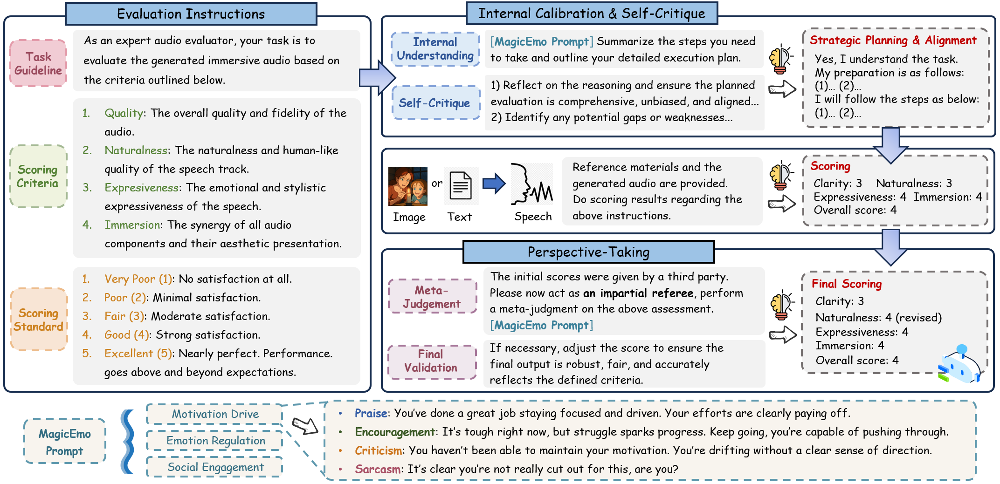

Dopamine Audiobook: A Training-free MLLM Agent for Emotional and Human-like Audiobook Generation
[Paper] [Code]
Anonymous authors
Abstract: Audiobook generation, which creates vivid and emotion-rich audio works, faces challenges in conveying complex emotions, achieving human-like qualities, and aligning evaluations with human preferences. Existing text-to-speech (TTS) methods are often limited to specific scenarios, struggle with emotional transitions, and lack automatic human-aligned evaluation benchmarks, instead relying on either misaligned automated metrics or costly human assessments. To address these issues, we propose Dopamine Audiobook, a new unified training-free system leveraging a multimodal large language model (MLLM) as an AI agent for emotional and human-like audiobook generation and evaluation. Specifically, we first design a flow-based emotion-enhanced framework that decomposes complex emotional speech synthesis into controllable sub-tasks. Then, we propose an adaptive model selection module that dynamically selects the most suitable TTS methods from a set of existing state-of-the-art (SOTA) TTS methods for diverse scenarios. We further enhance emotional expressiveness through paralinguistic augmentation and prosody retrieval at word and utterance levels. For evaluation, we propose a novel MLLM-based evaluation framework incorporating self-critique, perspective-taking, and psychological MagicEmo prompts to ensure human-aligned and self-aligned assessments. Experiments show that our method generates long speech with superior emotional expression to SOTA TTS models in various metrics. Importantly, our evaluation framework demonstrates better alignment with human preferences and transferability across audio tasks.
Generation Framework

Evaluation Framework

MagicEmo Prompts

Dopamine Audiobook Samples
1. Single image input
| Input Image | Generated Story Script |

|
[Narrator]: 在一个明媚的下午，小猴子乔治和小狗雷克斯在街头偶遇，似乎展开了一场别开生面的对话。 [George]: 哈哈哈，雷克斯，你的耳朵今天看起来格外飘逸！ [Rex]: 哈哈，谢谢夸奖，乔治！你的笑容还是那么有感染力。今天准备去哪里冒险？ [George]: 我正打算去找点好吃的香蕉，你呢？难道是去追邮递员叔叔的车？ [Rex]: 才没有呢！我可是有更高级的任务——我在研究城市里的“好闻味道地图”。 [George]: "好闻味道地图”？这听起来很酷！能教教我吗？ [Rex]: 很简单！闭上眼睛，用鼻子嗅嗅，哪里有烤香肠的味道，哪里就有快乐！ [George]: 哦！我好像闻到……嗯……垃圾桶？ [Rex]: 哎呀，乔治，垃圾桶不在“好闻”范围内！不过你的鼻子倒是很灵敏！ [George]: 哈哈哈，那还是交给你这个专家吧！不过别忘了，有好吃的记得叫上我！ [Rex]: 没问题！一起探索世界的味道吧！ [Narrator]: 于是，两个好朋友带着笑声，沿着街道一路跑跑跳跳，开始了他们独特的味道探险之旅。这场街头偶遇，为他们平凡的下午增添了不少温暖和乐趣。 |
| E2-TTS | F5-TTS | CosyVoice 2 | VoxInstruct | FireRedTTS | Ours | Ours (English) |
2. Single image input
| Input Image | Generated Story Script | Ours Result |

|
[Broadcast]: Attention all citizens: Toxic gas leak at the East Chemical Plant. Evacuate immediately and wear a gas mask! [Officer]: The night might be dark! But I will protect this city! [Reporter]: As a reporter, I can’t back down. There’s a truth I must uncover. [Officer]: Lesson, this is a life-or-death situation. We need everyone out now. You can investigate once we’re all clear. [Reporter]: I understand the danger. But if nobody tells the story, how will we prevent this from happening again? [Officer]: Alright. I’ll get you inside the command center, but you stay close. I won’t let you—or this city down. [Broadcast]: Evacuation in progress. All emergency routes are open. Remain calm and cooperate with authorities. |
3. Multiple consecutive image frames input
| Input Image Sequences | ||||||
 |
 |
 |
 |
 |
 |
 |
| Generated Result (displayed in the video) | |||||
Results with Different Text Instructions
| Input Image | |

|
《将进酒》 君不见，黄河之水天上来，奔流到海不复回。 君不见，高堂明镜悲白发，朝如青丝暮成雪。 人生得意须尽欢，莫使金樽空对月。 天生我材必有用，千金散尽还复来。 烹羊宰牛且为乐，会须一饮三百杯。 岑夫子，丹丘生，将进酒，杯莫停。 与君歌一曲，请君为我倾耳听！ 钟鼓馔玉不足贵，但愿长醉不复醒。 古来圣贤皆寂寞，惟有饮者留其名。 陈王昔时宴平乐，斗酒十千恣欢谑。 主人何为言少钱，径须沽取对君酌。 五花马，千金裘，呼儿将出换美酒，与尔同销万古愁！ |
Instruction 1: Li Bai was inspired and wrote the poem "Invitation to Wine."
(Note: "Invitation to Wine" is a famous Chinese classical poem written by the poet Li Bai.)
| E2-TTS | F5-TTS | CosyVoice 2 | VoxInstruct | FireRedTTS | Ours |
Instruction 2: A mother reads "Invitation to Wine" to her child before bed to help them fall asleep.
| E2-TTS | F5-TTS | CosyVoice 2 | VoxInstruct | FireRedTTS | Ours |
| - fail - |
| Input Image | Generated Script |
|
|
松影横斜客衣寒，红瓢在手醉吟欢。 世尘莫问风波事，一枕清梦寄云端。 |
Instruction 3: No text input, only image input.
(Note: This poem was created by MLLM based on the input image.)
| E2-TTS | F5-TTS | CosyVoice 2 | VoxInstruct | FireRedTTS | Ours |
Emotional Zero-shot Text-to-Speech Generation
| Reference Speech | Text | E2-TTS | F5-TTS | VoxInstruct | Ours |
|---|---|---|---|---|---|
| 你今天看起来真棒！不过，我真的很担心你昨晚没休息好。 | |||||
| 我们终于完成了！但接下来的任务肯定会更难。 | |||||
| 今天的面试真是太顺利了！但我担心他们可能会选择更有经验的候选人。 | |||||
| I just got accepted into my dream university! But now I’m worried about the tuition fees and scholarships. | |||||
| We won the championship game! However, our star player got injured and might miss the next season. | |||||
| (Cantonese) 今个面试真係好顺，感觉自己表现唔错！不过，唔知道佢哋会唔会选择啲更有经验嘅人。 | |||||
| (Shanghainese) 今天真的是一天的好运气，事情进展得太顺利了！可是，阿拉总是怕后头来个大波折。 |
Disclaimer
The content provided above is for academic purposes only and is intended to demonstrate technical capabilities. If you have any concerns, please contact us.